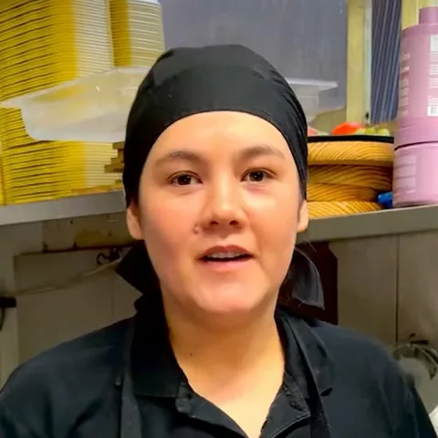
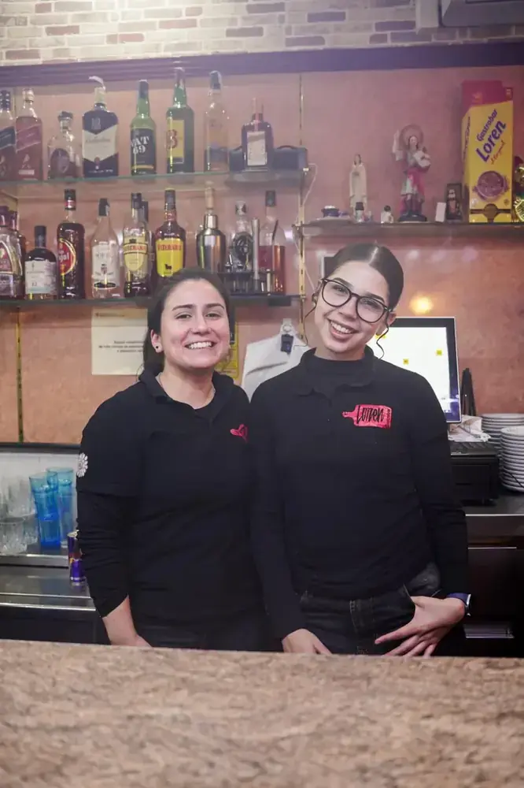
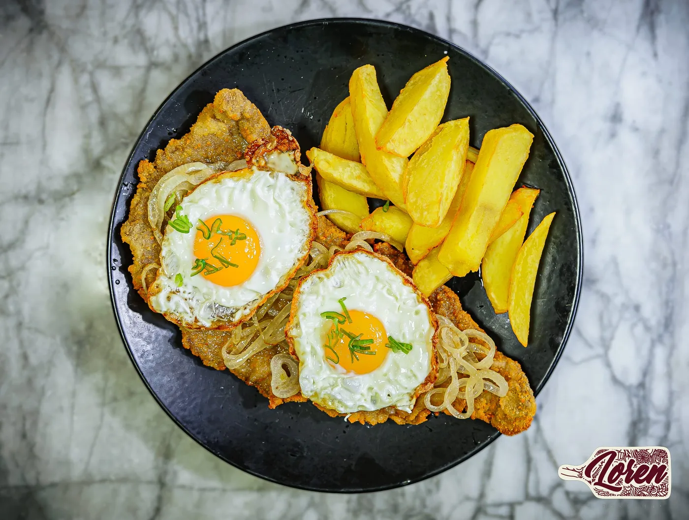
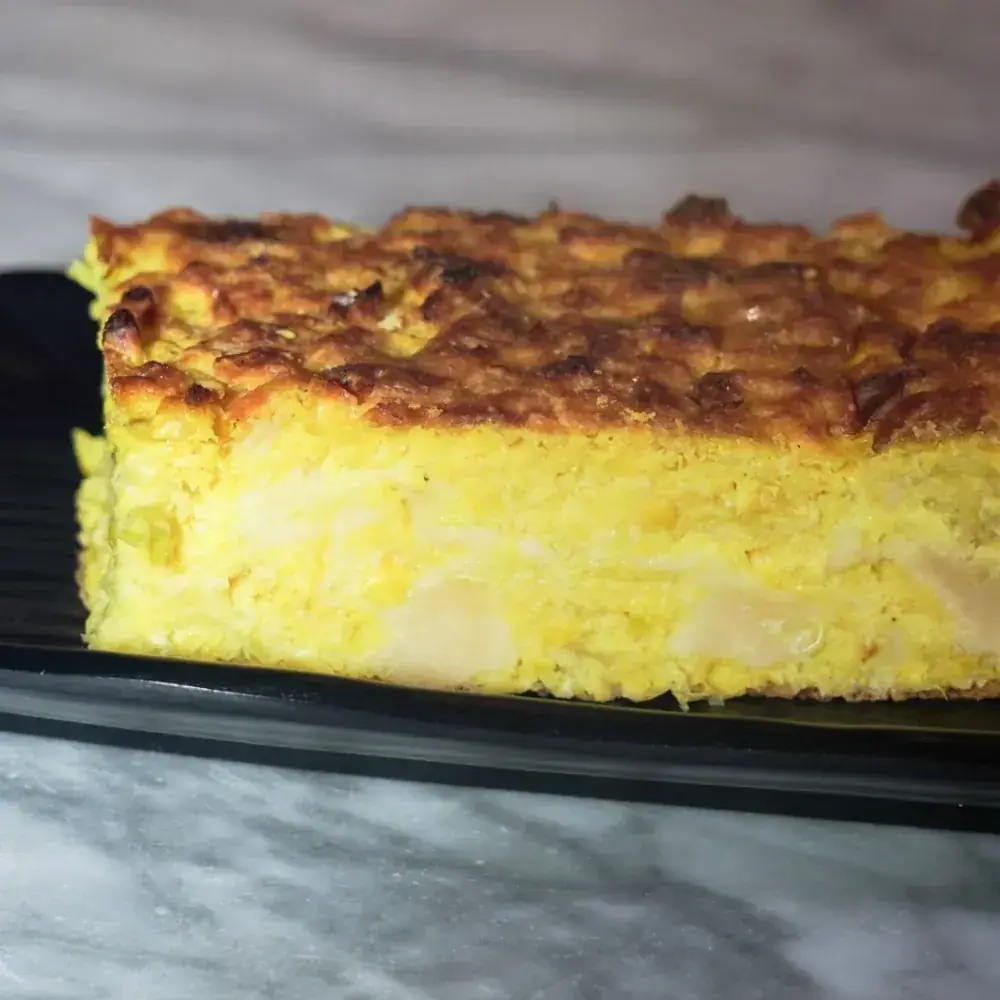
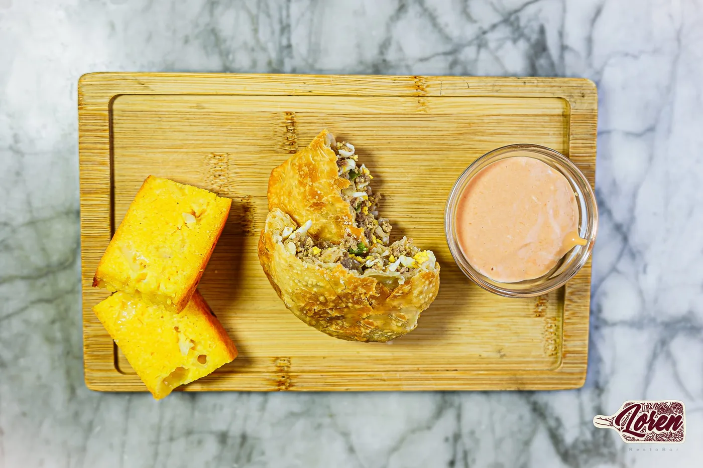
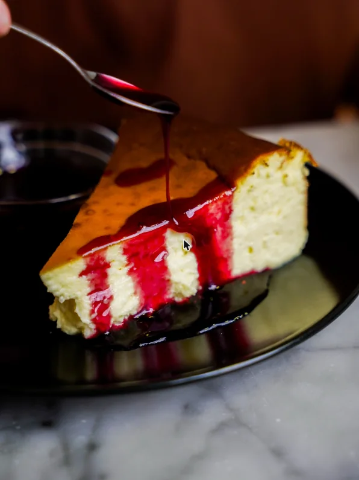

Cocina paraguaya · Barcelona
Hoy estrenamos web
Loren Restobar
Un pedacito de
Paraguay
en Barcelona
Sabores de Paraguay
Chipa guazú
el orgullo del asado paraguayo
Pastel de choclo · 3,90 €
Fines de semana
Vorí vorí
el caldo con el que Loren
representó a Paraguay
representó a Paraguay
Cocina casera
con sabor a casa
Carrer de la Muntanya 115 · Camp de l'Arpa
lorenrestobar.com
Nuestra web nueva

Nuestra historia
La familia detrás
de cada plato
de cada plato

Loren Vera · chef y fundadora


Griselda · mano derecha en la cocina
Fanny, Jennifer y José · en sala
Fanny, Jennifer y José · en sala
Cocina de Loren
La receta de
la chipa guazú
la chipa guazú
paso a paso, con Loren
Ya puedes
visitarnos
visitarnos
lorenrestobar.com
Reserva · Pide a domicilio · Eventos
Aguyje!
Carrer de la Muntanya 115 · Camp de l'Arpa · Barcelona
Cocina paraguaya · Barcelona
Hay sabores
que nos hacen
sentir en casa
que nos hacen
sentir en casa
Loren Restobar
Todo lo que sale
de la cocina de Loren
de la cocina de Loren





y ahora, en tu móvil
Pruébalo en
Loren
Restobar
Restobar
Carrer de la Muntanya 115
Camp de l'Arpa · Barcelona
Camp de l'Arpa · Barcelona
lorenrestobar.com
También a domicilio y para eventos